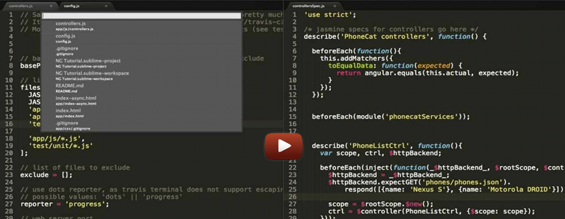

On the AngularJS team, we rely on testing. And we always seek for better tools that would make our life easier. That's why we created Testacular - a test runner that fits all our needs.
- 
Introductory Screencast The spectacular quick start to Testacular.

JS Everywhere 2012 EuropeWatch Vojta Jína present Testacular at JS Everyhwhere.
Getting Started
Be sure to read the getting started guide, which is a complete guide to integrate Testacular into your project.
Install using npm install -g testacular